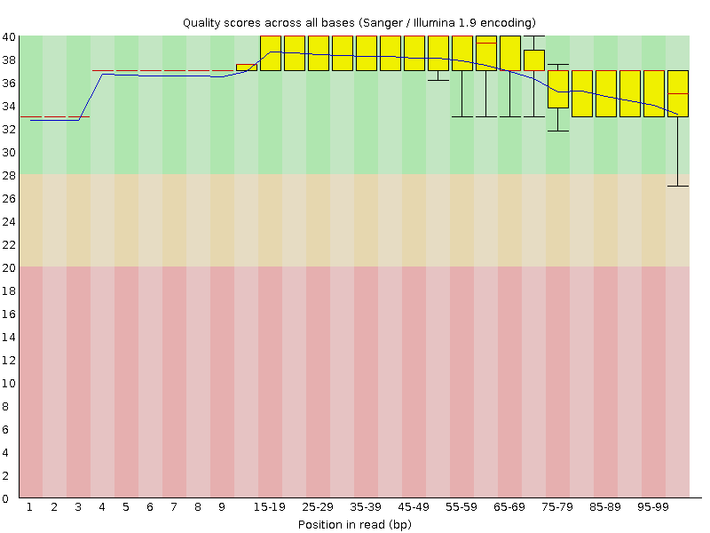
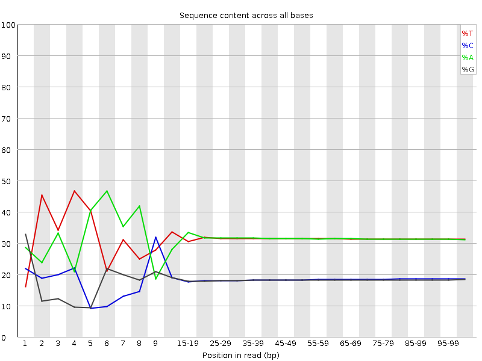
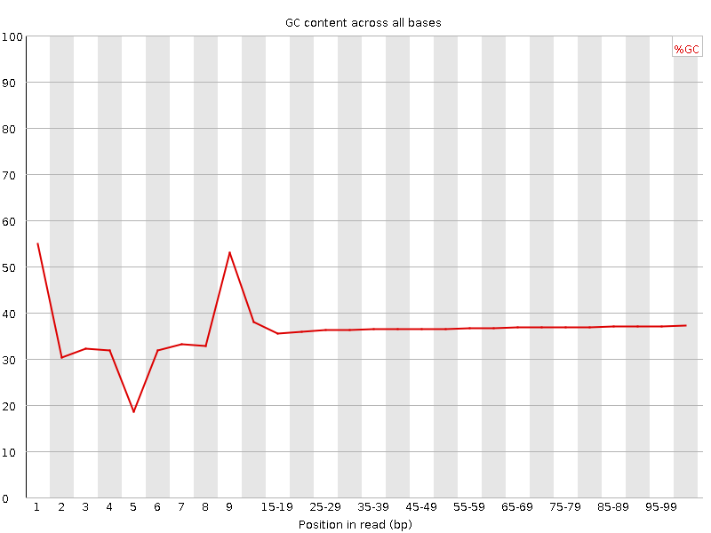
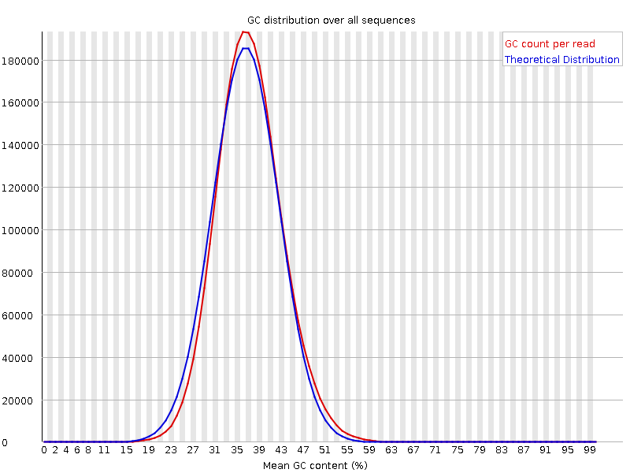
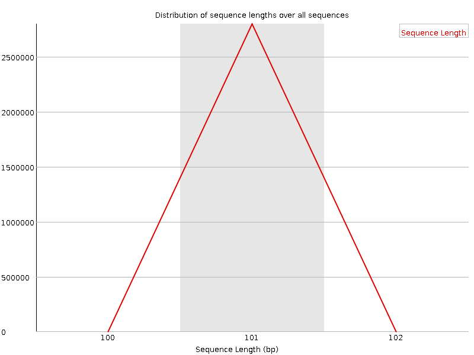
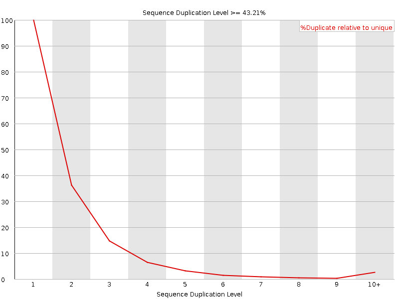
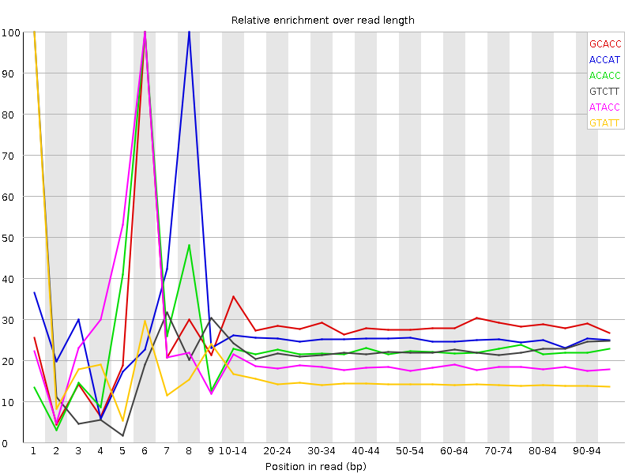

![[OK]](Icons/tick.png) Basic Statistics
Basic Statistics
| Measure | Value |
|---|---|
| Filename | 1006_BC_uniq1.fastq |
| File type | Conventional base calls |
| Encoding | Sanger / Illumina 1.9 |
| Total Sequences | 2801472 |
| Filtered Sequences | 0 |
| Sequence length | 101 |
| %GC | 36 |
Per base sequence quality

Per sequence quality scores

![[FAIL]](Icons/error.png) Per base sequence content
Per base sequence content

Per base GC content

Per sequence GC content

Per base N content

Sequence Length Distribution

![[WARN]](Icons/warning.png) Sequence Duplication Levels
Sequence Duplication Levels

Overrepresented sequences
No overrepresented sequences
Kmer Content

| Sequence | Count | Obs/Exp Overall | Obs/Exp Max | Max Obs/Exp Position |
|---|---|---|---|---|
| GCACC | 142190 | 1.4421086 | 5.056143 | 6 |
| ACCAT | 379940 | 1.2996911 | 5.021498 | 8 |
| ACACC | 201285 | 1.182014 | 5.145963 | 6 |
| GTCTT | 331970 | 1.1391991 | 5.048742 | 1 |
| ATACC | 322295 | 1.1025003 | 5.575591 | 6 |
| GTATT | 501465 | 1.0053357 | 6.484686 | 1 |
| AATAC | 489420 | 0.9780847 | 5.630775 | 5 |
| ATACA | 473855 | 0.9469788 | 5.017302 | 6 |
| ATATA | 804390 | 0.93643 | 5.2907343 | 1 |
| ATACT | 432070 | 0.86098015 | 5.6667004 | 6 |
| TATTA | 738060 | 0.8567311 | 5.611147 | 2 |
| TATAC | 412690 | 0.8223618 | 6.4533124 | 5 |
| GTATA | 371770 | 0.7474818 | 7.0966396 | 1 |